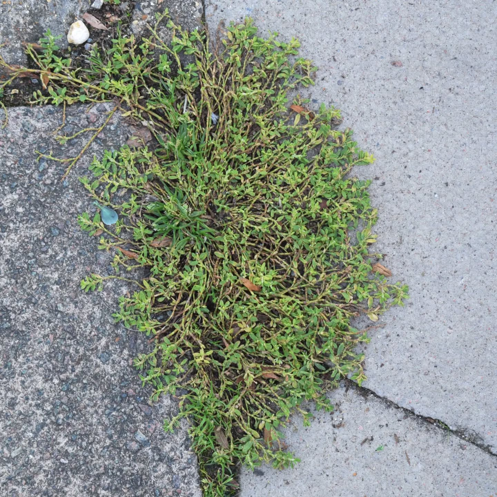

Work
Every drawing here began as a pause on a walk.
Open one and stay with it. Go in until the moss comes apart into single lines, each one put down by hand. The small bar in the corner will tell you how little room all of it takes.
Field notes
Seen on walks
PhotographsBefore the pen, the walk. These are the things that stopped her, photographed where they grew.
